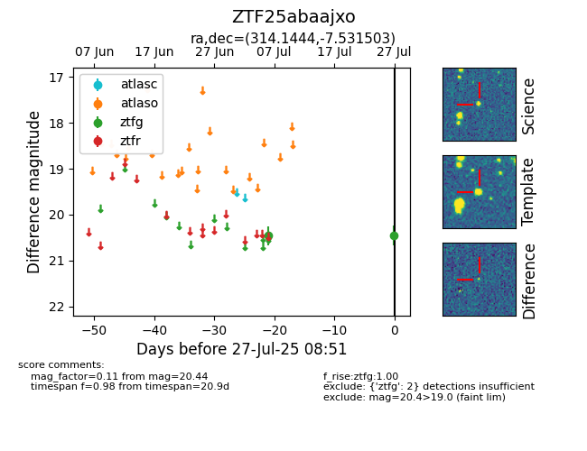

Target ZTF25abaajxo at 2025-07-27 08:51, see:
FINK: fink-portal.org/ZTF25abaajxo
Lasair: lasair-ztf.lsst.ac.uk/objects/ZTF25abaajxo
ALeRCE: alerce.online/object/ZTF25abaajxo
alt names
ZTF25abaajxo (ztf,fink)
coordinates:
equatorial (ra, dec) = (314.1444,-7.53150)
galactic (l, b) = (40.8673,-31.19452)
photometry
last ztfg=20.44
2 ztfg detections
